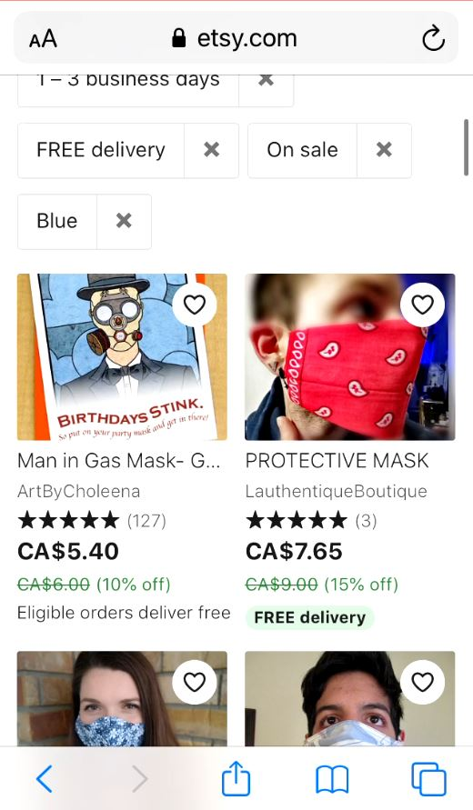

Introduction
As a follow-up to previous week's usability analysis, I have tailored the same test for mobile devices. Once again, I am testing the search features of Etsy to determine how effectively one can find items based on ratings and price. The main goal is to discover usability issues that are unique to mobile devices. The three tasks given to test participants were:
- You are on a tight budget and you need at least 10 face masks of any type.
- You are looking for your supplies for back to school/work, and you want the highest rated option.
- You are looking for a birthday present for a friend who likes gardening.
The three participants ranged from young adult to middle age and all use the internet between 30-80 hours a week. They were guided through the tests with a screen and voice recorder.
Link to Test ScriptThe Home Page
Fortunately, the mobile version of the site did not appear to have noticeable usability issues from the outset. In general, the mobile site is more condensed and not as spread out as on desktop. This reduces the white space which gave the desktop site a more pleasant feel. The content is generally the same, although the "popular" items section was omitted.
The site seems to get its message across more effectively like thisResults
Although usability problems were not apparent from the outset, I could tell that the oldest participant was a little overwhelmed by the thought of searching without the search bar. She was not aware of the hamburger button toggle for product category menus, and elected to using links on the front page to find what she was looking for.
The mobile site omits the Popular items but includes the "Editors' Picks" labelsSimilar to the desktop browser test, the filter button took a while to find. However, when it was found, it was decently useful to one participant. This participant pressed a "Gas mask card" on task 1 because it was the cheapest, but probably didn't look at the picture or name clearly. The name was largely obscured due to reduced screen real estate. There was also no easy way to filter by face mask.
 Interesting how the user can be so focused on filtering their results that they gloss over the imageOne general observation was that the home button was used much less, with participants more likely to press forward or back arrows to navigate. This makes sense when one considers the longer page lengths. The user is less likely to scroll back to the top to press the logo for home.
Conclusion
Through this round of tests, I was able to observe a few similarities and differences between the desktop and mobile usability. Firstly, I could see that participants were similarly aware of the amount of options, but seemed to be less emotionally affected by them. The filtering features also similarly took a while to find, but when found, they were used more effectively as it replaced the left sidebar on the desktop site. There was less dependence on the home button, but also reduced likelihood of scrolling to the very bottom.
This category menu is surprisingly more useful on mobile
Suggestion
What I found was that the problems that occurred were largely related to screen real estate. Because products are listed in two columns instead of four, users could focus on the images a little better and therefore navigate more easily using just images. However, this also makes the user a bit less in touch with the hierarchy and feel less in control of the navigation. Improving the experience on mobile won't be easy due to such constraints, but if navigational elements were clarified in a way, I could see how general users can benefit.